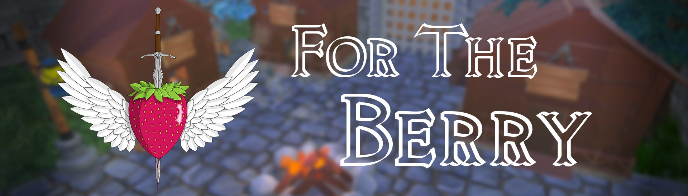

For The Berry

Fonctionnalités
- Jeu vidéo Beat Them All (BTA)
- Jouable à 4 joueurs
- Éliminer les ennemis pour avancer dans le jeu
- Utilisation de plusieurs types d'armes : épée, arc, bâton
-
Création du jeu de A à Z : histoire, comportements des ennemis, incrustation des personnages et
des armes
Contexte
- UQAC
- Développement C#
- Utilisation du moteur de jeux Unity
- Versionning Perforce, Animations avec Maximo
-
Janvier à Avril 2020
-
Laboratoire des jeux vidéos
-
Alexia NEUFOND, Yann GALAN, Vincent BOYER, Vincent RABIER, Théo BERTET, Christopher LERET,
Benoît RICHARD, Kilian PAQUIER